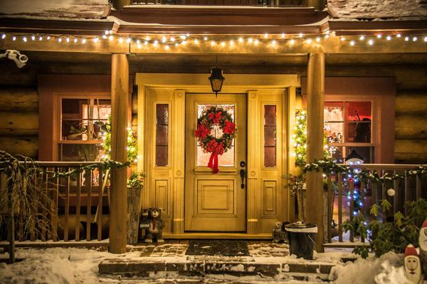
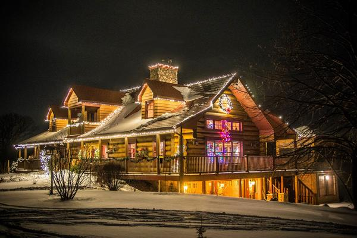
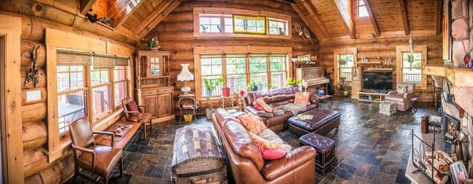
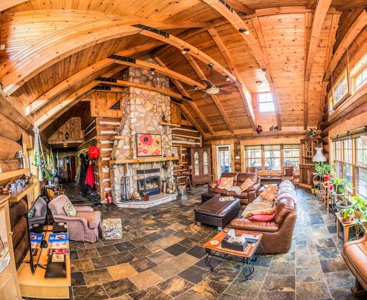
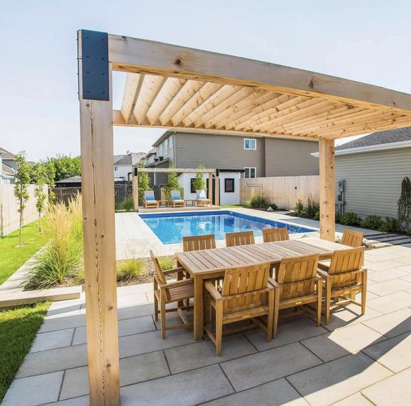

La photographie immobilière à Embrun donne à votre inscription des photos lumineuses et modernes qui aident les acheteurs à s’arrêter et à réserver une visite. Dan Benoit Photo photographie les maisons pour les courtiers et les propriétaires dans la région, dedans comme dehors, du trottoir au dernier détail.
Ce qui est inclus
- Intérieurs et extérieurs lumineux
- Les détails que les acheteurs remarquent, des cuisines aux espaces de vie
- Droits d’image complets
- Service local et rapide
Pour les courtiers
Des photos d’inscription qui présentent chaque maison à son meilleur, prêtes pour votre inscription et vos médias sociaux.
Pour les propriétaires
Vous vendez votre maison vous-même? Des photos professionnelles aident votre inscription à se démarquer et à vendre la visite.
Option drone
Photos aériennes et courte vidéo de présentation qui montrent la propriété, le terrain et le quartier vus d’en haut.
Photos d’inscriptions






Dans Prescott-Russell et l’Est ontarien
La photographie immobilière à Wendover et le photographe à Rockland ont chacun leur propre page. Pour les vues aériennes seulement, voyez la photo et vidéo par drone.
Questions fréquentes
Que comprend une séance d’inscription?
Des photos lumineuses de chaque pièce et de l’extérieur de la maison, y compris les détails que les acheteurs remarquent. Vous recevez les droits d’image complets, prêts pour votre inscription.
Peut-on ajouter des photos par drone à une séance d’inscription?
Oui. Des photos aériennes et une courte vidéo de présentation peuvent être ajoutées pour montrer la propriété, le terrain et les environs vus d’en haut.
Quelles régions couvrez-vous pour la photographie immobilière?
Embrun, Rockland, Russell, Casselman, Wendover et la région d’Ottawa, dans Prescott-Russell et l’Est ontarien.
Quel est le délai de livraison?
Les séances sont locales, avec un délai rapide. Appelez ou textez le 613-889-2215 pour vérifier le délai pour votre inscription.
Comment réserver une séance d’inscription?
Appelez ou textez le 613-889-2215, ou écrivez à Dan@DanBenoit.com.
Prêt à inscrire?
Appelez ou textez 613-889-2215, ou envoyez un message depuis la page de contact.
Envoyez un message